Нова графіка для Tower Defense
Unity PRO · урок 5 «Самостійна робота. Покращення гри» · набір Kenney Tower Defense Kit
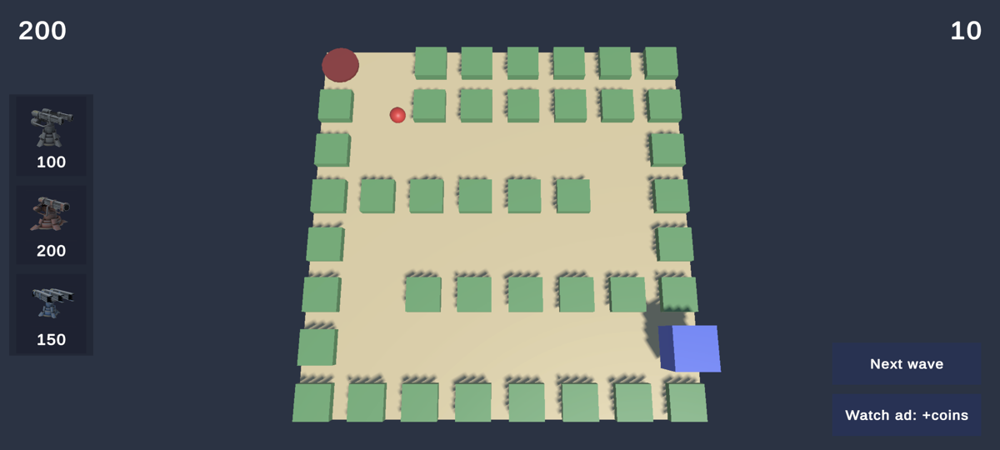
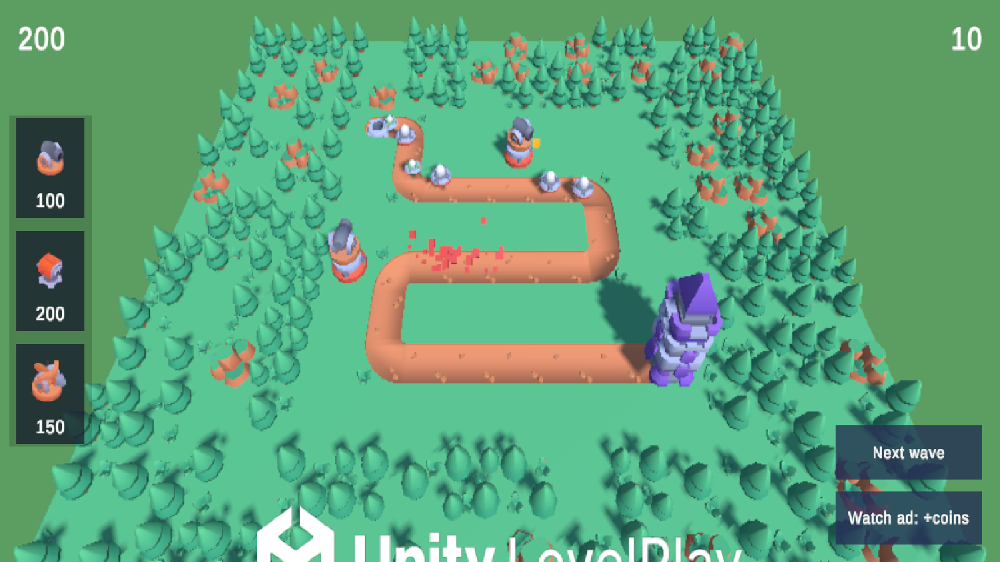
1Завантаж набір
Відкрий kenney.nl/assets/tower-defense-kit і натисни Download. Розпакуй архів.
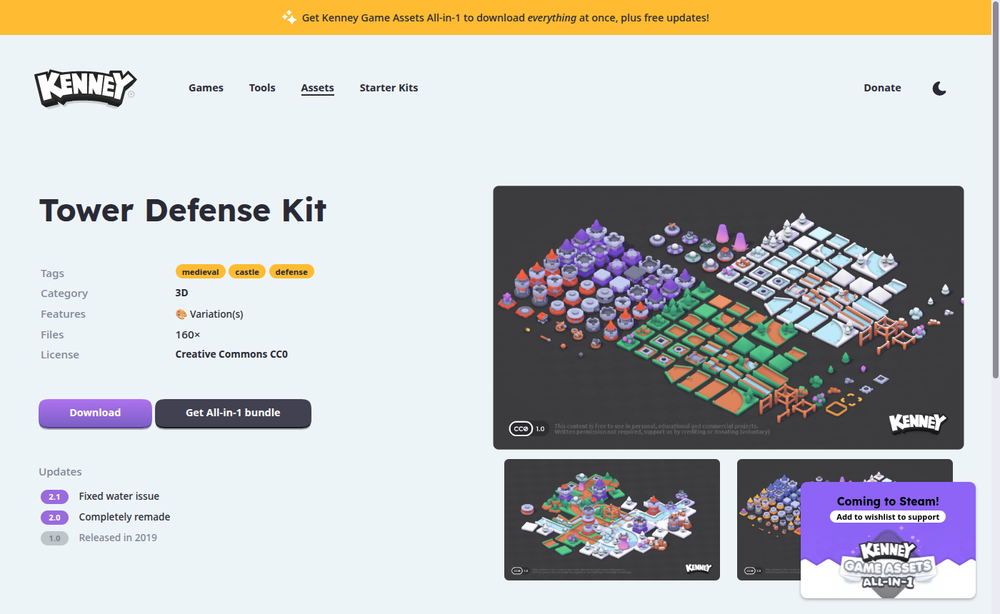
2Імпортуй моделі в проєкт
- У вікні Project створи теки
Assets/Kenney/TowerDefenseKit/Models. - З архіву перетягни у
Modelsусі файли з текиModels/FBX formatразом із підтекоюTextures(у ній лежитьcolormap.png).
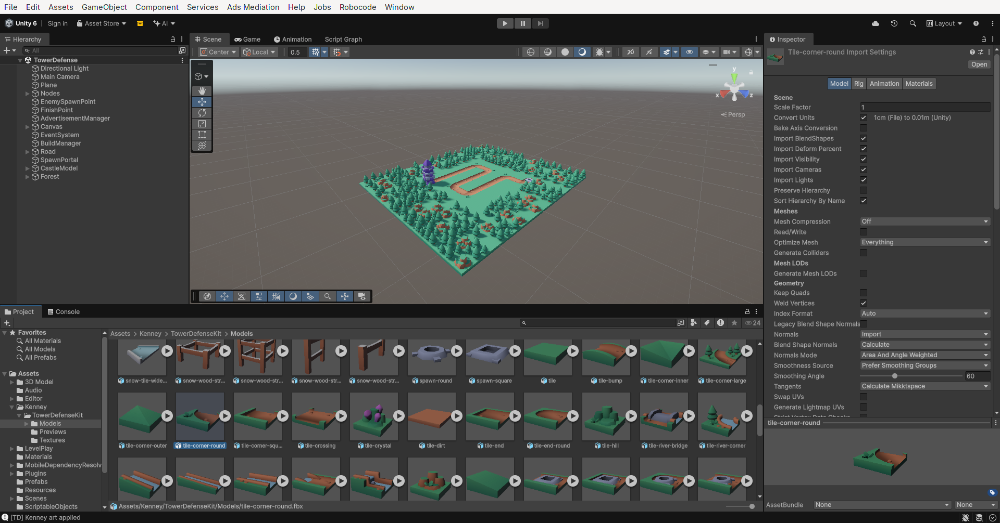
3Створи один матеріал на всі моделі
Усі моделі Kenney фарбуються однією картинкою-палітрою. Тому матеріал потрібен лише один.
- ПКМ у
Assets/Kenney/TowerDefenseKit→ Create → Material, назвиKenney. - Shader: Universal Render Pipeline/Lit.
- У Base Map перетягни
Models/Textures/colormap.png. Smoothness постав близько 0.15, щоб моделі не блищали.
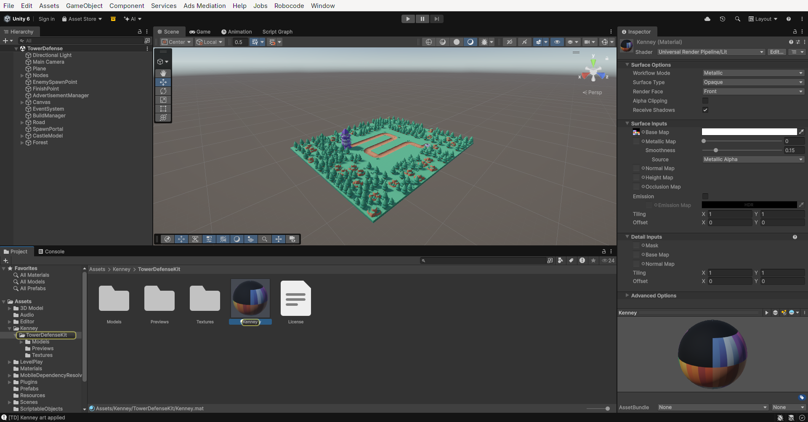
colormap.png з теки FBX, а не variation-a.png.4Вузол = трав'яний тайл
Тайли Kenney мають розмір рівно 1×1, тож проміжки між вузлами більше не потрібні: поле стане суцільним.
- Відкрий префаб Node (подвійний клік).
- Transform → Scale =
1, 1, 1. - Mesh Filter → Mesh =
tile. Mesh Renderer → Material =Kenney. - Box Collider: Center =
0, 0.3, 0, Size =1, 0.6, 1. - Дочірній BuildPoint: Position Y =
0.2(верх тайла).
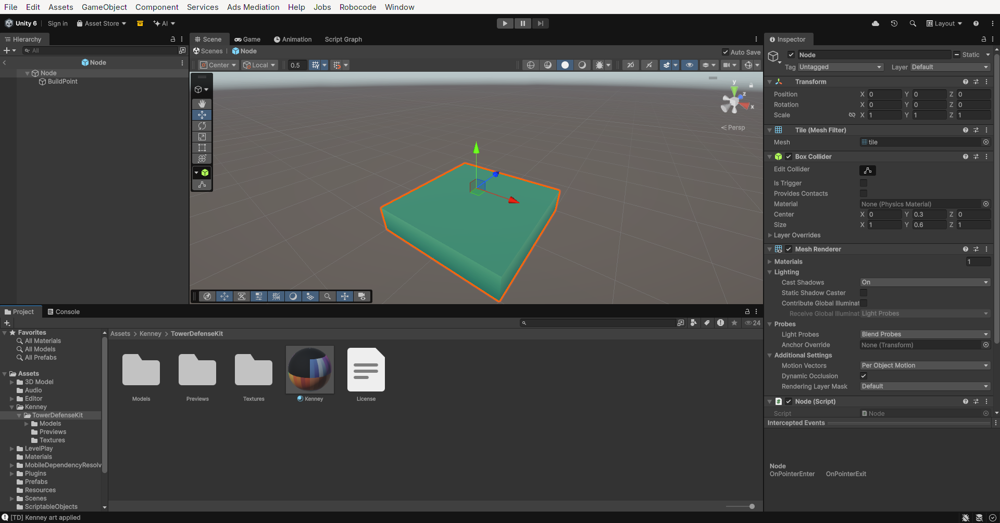
5Розстав вузли щільно
Увімкни прив'язку до сітки з кроком 1 (а не 0.5, як на уроці 1) і пересунь вузли так, щоб вони стояли впритул. Там, де раніше була дорога, лиши порожні клітинки.
6Збери дорогу з тайлів
Створи порожній об'єкт Road і перетягуй у нього тайли дороги на порожні клітинки. Тобі знадобляться чотири види:
| Тайл | Де ставити | Куди «дивиться» без повороту |
|---|---|---|
tile-straight | пряма ділянка | північ ↕ південь |
tile-corner-round | поворот | з'єднує північ і захід |
tile-end-round | кінець дороги біля замку | відкритий на північ |
tile-spawn-end-round | початок дороги, де з'являються вороги | відкритий на північ |
0: як у таблиці;90: північ стає сходом;180: північ стає півднем;270: північ стає заходом.
tile-corner-round з Y = 180.
Дублюй тайл через Ctrl+D і пересувай із прив'язкою до сітки.
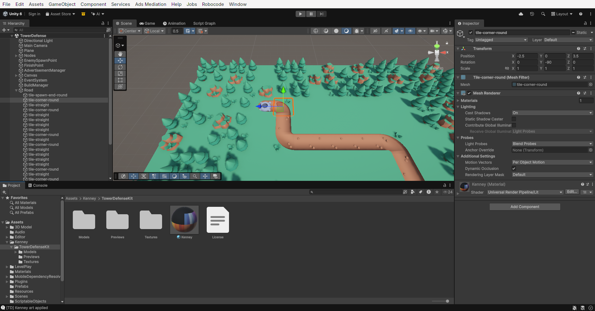
7Plane стає невидимою підлогою
Ворогам потрібна поверхня для NavMesh, але бачити її не обов'язково.
- Вибери Plane і зніми галочку з компонента Mesh Renderer (сам Plane не видаляй!).
- Position Y =
0.1(висота дороги). Scale підбери рівно під поле.
8Нові турелі
Відкрий префаб турелі. Заміни тільки моделі, а все інше не чіпай.
- Base → заміни модель на башту
tower-round-bottom-a(Scale0.8, 0.6, 0.8). - Усередині Weapon заміни модель гармати на
weapon-cannon. Для інших турелей візьмиweapon-turretтаweapon-ballista. - Підніми Weapon на верх башти (Position Y ≈
0.36).
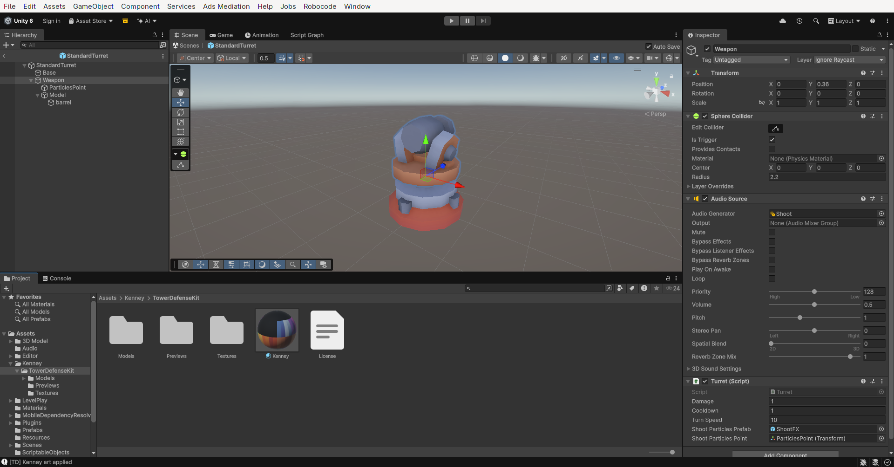
9Вороги-НЛО
- Відкрий префаб Enemy. Видали в нього компоненти Mesh Filter і Mesh Renderer (сфера зникне).
- Перетягни всередину модель
enemy-ufo-aяк дочірню, Scale ≈0.55. - NavMesh Agent: Radius
0.25, Base Offset0.15(НЛО трохи висить над дорогою). - Для EnemyFast та EnemyTank візьми
enemy-ufo-bіenemy-ufo-c.
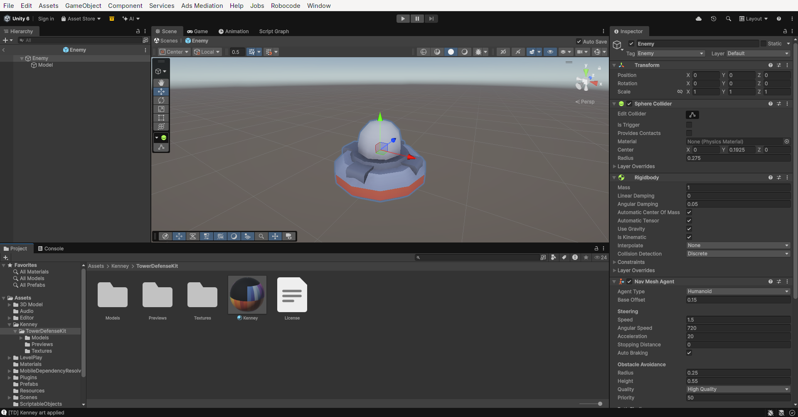
10Спавн і замок
На клітинку спавну постав spawn-round. Замок збери з частин башти, як із конструктора: tower-square-bottom-b → tower-square-middle-a → tower-square-top-a → tower-square-roof-b, кожну частину поверх попередньої.
Кубу FinishPoint вимкни Mesh Renderer: його Box Collider (тригер) і скрипт Castle мають лишитися!
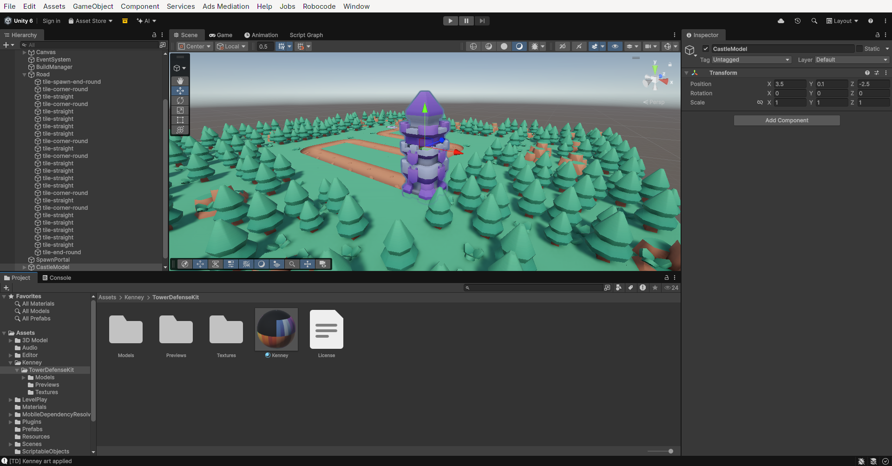
11Ліс навколо поля
Обклади поле тайлами tile-tree, tile-tree-double, tile-tree-quad і tile-rock. Повертай їх на 90°, щоб ліс не виглядав однаково. Познач їх Static, як на уроці 8 (Batching Static).
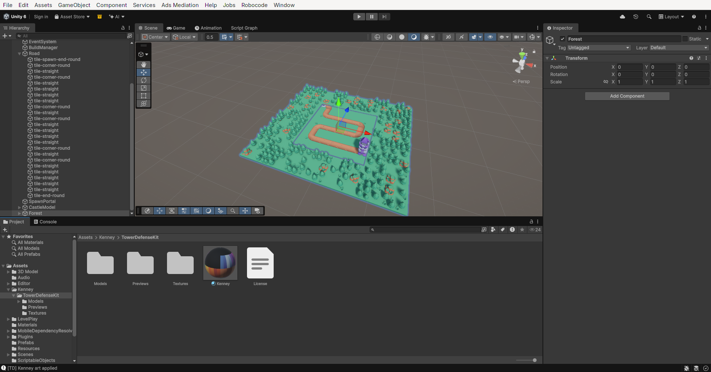
12Перепечи NavMesh
Поле змінилося, тож навігаційну сітку треба зробити заново: Plane → компонент NavMesh Surface → Bake.
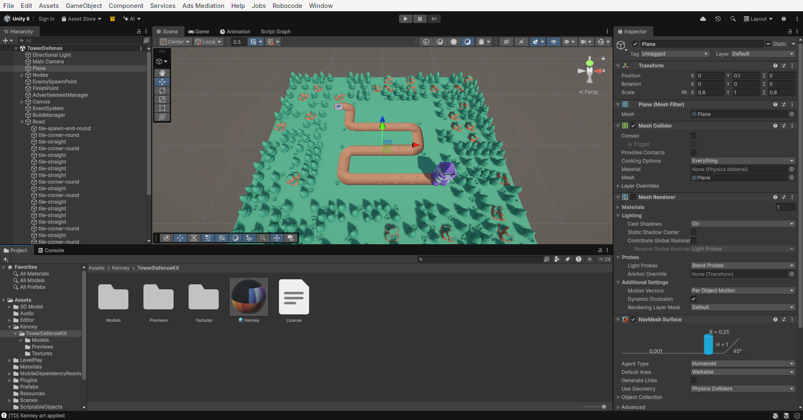
13Камера та іконки магазину
- Main Camera: Position
0, 8.6, -7.4, Rotation X52. Background — зелений, під колір трави. - Іконки: у теці
Previewsз архіву є картинки гармат. Імпортуйweapon-cannon.pngта інші, постав Texture Type = Sprite і вкажи їх у полі Icon своїх TurretInfo.
Тисни Play, будуй турелі й запускай хвилі!
Якщо щось пішло не так
| Проблема | Причина | Що зробити |
|---|---|---|
| Моделі білі | У матеріалі немає Base Map | Крок 3: постав colormap.png |
| Моделі рожеві | Матеріал не для URP | Shader → Universal Render Pipeline/Lit |
| Вороги ходять по траві | Старий NavMesh або низький колайдер вузла | Крок 4 (Size Y = 0.6) і крок 12 (Bake) |
| Вороги стоять на місці | NavMesh не запечено, або Plane вимкнено цілком | Вимкни лише Mesh Renderer, потім Bake |
| Турель не будується | Клік не влучає в колайдер вузла, або немає BuildPoint | Крок 4: Box Collider і BuildPoint |
| Вороги не б'ють замок | Вимкнули цілий FinishPoint замість Mesh Renderer | Увімкни FinishPoint, вимкни тільки рендер |
Додаткове завдання: інші набори з Asset Store
На слайді 6 є ще чотири безкоштовні набори. З ними можна зробити рівні в іншому стилі:
- Forest — Low Poly Toon Battle Arena / Tower Defense Pack
- Dungeon — Low Poly Toon Battle Arena / Tower Defense Pack
- Desert — Low Poly Toon Battle Arena / Tower Defense Pack
- Goblin & Cannon — анімований ворог-гоблін
Як додати: на сторінці набору натисни Add to My Assets (потрібен вхід в Unity ID) → в Unity відкрий Window → Package Management → Package Manager → My Assets → вибери набір → Download → Import.
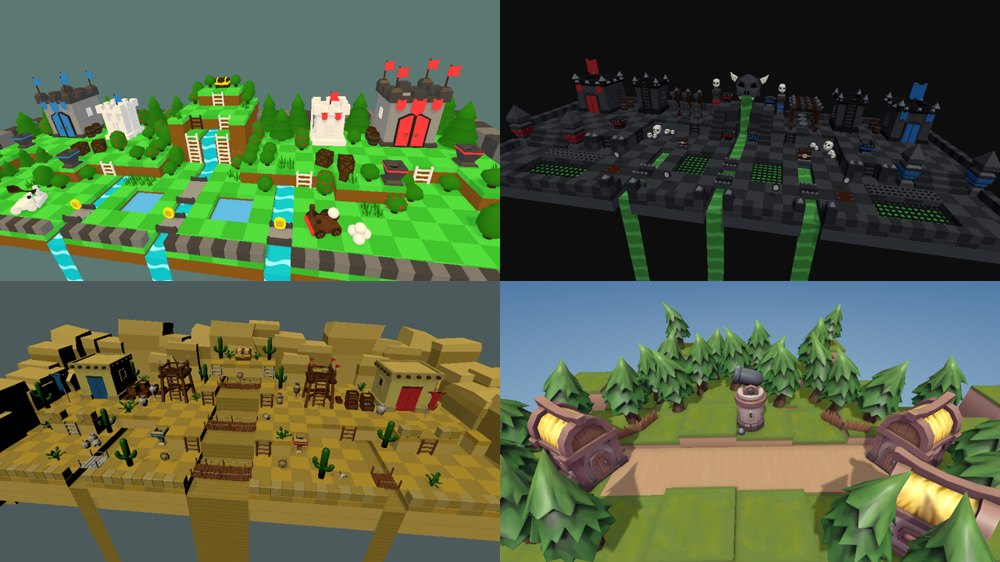
Rotator, ChestDemo, MaterialMover). Якщо імпортуєш обидва, загорни скрипти одного з наборів у namespace, наприклад namespace AurynSky.Desert { ... }. Файли не видаляй, бо на них посилаються префаби набору.Для викладача
Еталонний проєкт: ~/Robocode/Courses/Unity/TowerDefense2026, гілка/тег kenney-art (поверх lesson-08).
Меню Robocode → Tower Defense → Apply Kenney art автоматично виконує кроки 3–13 над сценою уроку 8 (скрипт Assets/Editor/Robocode/TowerDefenseArt.cs); зручно для порівняння з роботами учнів.
Ігрова логіка не змінюється: префаби перезаписуються за тими самими шляхами, тому TurretInfo та посилання на сцені не ламаються. Перевірено на ПК (кліки через Input System, хвилі, нагорода) і на Android (IL2CPP, ARM64).